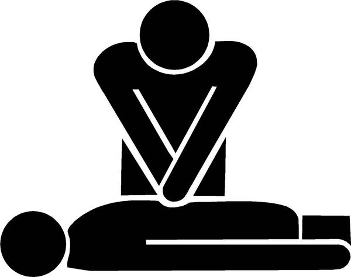

Health:
Have access to clean waters at all times. Clean water is your key to survival. Inspect water sources before drinking you never know if a zombie is in it. Still water tastes as bad as it is bad for you. Look for running currents. Use water filters.
Sanitation:
- Hand sanitizers
- Frequently wash hands/avoid touching your face.
- Try to wear gloves/masks
- Avoid contact with those who are ill? Transforming into zombies.
- Stay away from sharing food unless necessary
- Low on water/unable to wash hands use your left hand to wipe yourself with and your right to eat with to prevent cross contamination.
- Sanitize cooking utensils? Knives by sticking them into fire to eliminate food poisoning.

First Aid Kit Essentials:
- You can purchase a first aid kit from Red Cross, drug store, or make your own.
- Soap (soap can be made from ash. Ash= lye) clean wood ash + water = soap
- Medications
- Bandages, band aides
- Isopropyl alcohol

CPR:
- Kneel beside the unconscious person. Open their airways by tilting their head back and lifting their chin.
- Check their breathing by seeing their chest rise and fall. Feeling for breath on your cheek.
- Not breathing: Place the heel of one hand on the person’s breastbone and the other on top. Straighten your arms and push down firmly. Give two compressions every second.
- 30 compressions check the person’s air way. Pinch their nostrils closed. Take a deep breath, seal around their mouth and breath out.
- Repeat but five seconds longer for when breathing out. Go back to 30 chest compressions and two breaths until they regain consciousness.

Choking:
- If the person is conscious, stand behind them, lean their head forward then strike them forcefully between the shoulder blades with an open palm.
- If, after five attempts, they have not coughed up the obstruction, try the Heimlich manoeuvre.
- Standing behind, place your arms around their waist and bend them well forward. Clench your fist, and place it above their belly button.
- Place your other hand on top, then thrust both hands backwards in the stomach with a hard, upward movement. Repeat until the object is expelled through their mouth.
Bleeding:
- Bleeding from an artery can cause death in minutes so it is vital to apply hard pressure on the wound until medical help arrives.
- Press with a sterile cloth and bandage it if possible but if the blood soaks through, do not remove dressings, just place more on top. Or use your hands to apply pressure.
- The person must be made to lie down, preferably with their head lower than the rest of them to get enough oxygen to the brain.
- If possible, position the wounded area higher than the rest of their body to reduce bleeding.